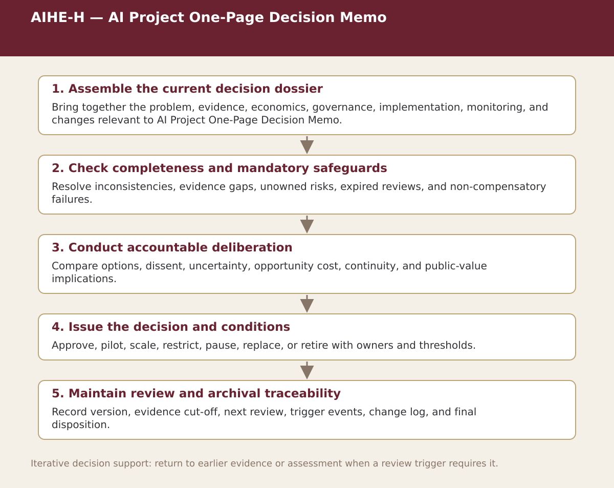

Supplemental specialist tool · Chapter 12
AIHE-H — AI Project One-Page Decision Memo
Summarize the decision problem, comparator, evidence, economics, risks, implementation, conditions, and decision requested.

Process steps
| Step | Purpose | Review |
|---|---|---|
| 1. Assemble the current decision dossier | Bring together the problem, evidence, economics, governance, implementation, monitoring, and changes relevant to AI Project One-Page Decision Memo. | Proceed, revise, escalate, restrict, or stop as appropriate |
| 2. Check completeness and mandatory safeguards | Resolve inconsistencies, evidence gaps, unowned risks, expired reviews, and non-compensatory failures. | Proceed, revise, escalate, restrict, or stop as appropriate |
| 3. Conduct accountable deliberation | Compare options, dissent, uncertainty, opportunity cost, continuity, and public-value implications. | Proceed, revise, escalate, restrict, or stop as appropriate |
| 4. Issue the decision and conditions | Approve, pilot, scale, restrict, pause, replace, or retire with owners and thresholds. | Proceed, revise, escalate, restrict, or stop as appropriate |
| 5. Maintain review and archival traceability | Record version, evidence cut-off, next review, trigger events, change log, and final disposition. | Proceed, revise, escalate, restrict, or stop as appropriate |
Status. This process map is a navigation and decision-support aid. Adapt it to the relevant jurisdiction, institution, population, workflow, technology version, evidence cut-off, and accountable authority.